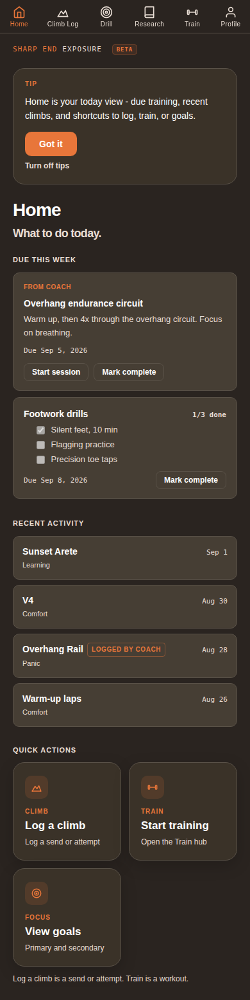
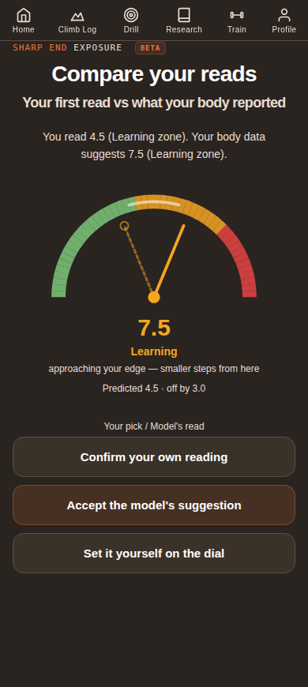
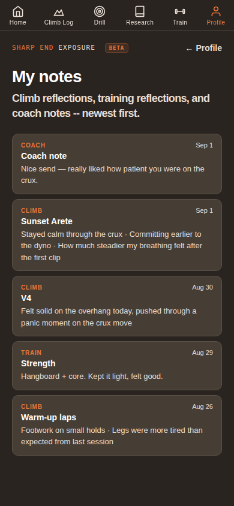
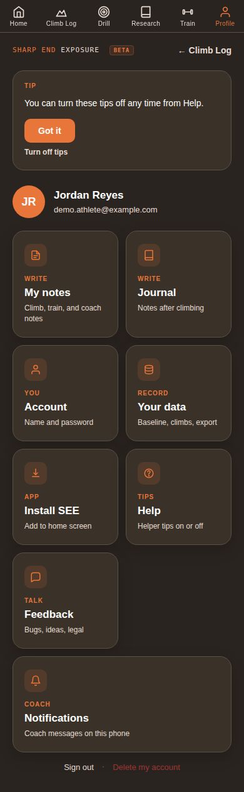

SEE isn't a safety system — it's a noticing tool. Every time you log a climb, you're tracking not just what you climbed, but how it felt: comfortable, on the edge of learning, or in real panic. Over weeks, that adds up to a real picture of where you're strong and where you're stuck.
Start here
Your Home screen
Home is your today view — what's due from your coach, your own habit-tracking, and recent activity. It's also the fastest way to log a climb.

Due this week shows anything your coach assigned you, plus your own tracked habits (like a footwork drill checklist). Tap Start session or check items off as you go.
Recent activity is a live feed of your last several climbs and sessions — including ones your coach logged for you on the spot, tagged Logged by coach so it's always clear who entered it.
Quick actions at the bottom get you straight into logging a climb, starting a training session, or checking your goals — the three things you'll do most often.
The very first time you use SEE, you'll go through a short baseline: a few questions about how different types of terrain (slab, vertical, overhang, roof, crack) usually feel to you. That's what your coach's "Where's the gap?" panel compares your real logged climbs against later — so it's worth answering honestly, not aspirationally.
The core idea
Comfort, Learning, and Panic
Every climb you log gets tagged with one of three zones. This is the single most important habit in the app — everything your coach sees is built from these tags.
ComfortWithin your ability. Easy to execute, low mental load. Good for volume and consolidating technique.
LearningRight at your edge. Productive struggle — this is where real progress happens, but it takes more out of you.
PanicFear or anxiety is running the show, not skill. Not inherently bad to log — it's honest data — but a pattern of panic on one terrain type is exactly what your coach needs to see.
There's no wrong answer here. A panic-zone climb isn't a failure — it's information. The whole point of SEE is making the mental side visible instead of guessing at it after the fact.
The habit
Logging a climb
Tap Log a climb from Home. First you give your own read on the zone on a simple dial. Then you log the result: Sent, Fell, Took, or Backed off. Terrain and grade come next — quick required picks — and naming the climb is the only truly optional step.

Drag the dial to your own read on how activated you felt, then log what actually happened — Sent, Fell, Took, or Backed off. That's the whole required part.
Pick a terrain and grade — both are required to continue. Naming the climb is optional; skip it and SEE just labels it "Climb 1," "Climb 2," and so on. Re-attempting a climb you've already starred as a project is faster — tap +Attempt and terrain, grade, and name all come pre-filled from what you starred.
You'll also get an optional "Want to go deeper?" — four quick body questions to refine your read — skip it entirely if you're short on time.
Answer at least one of those body questions and SEE shows you Compare your reads: your own pick as the dashed needle against the model's read as the solid needle, with three choices — confirm your own reading, accept the model's suggestion, or set it yourself on the dial. Skip the body questions entirely and your Result choice alone sets the saved zone.
Whatever you land on is what actually gets saved and shows up in your journal, your coach's Progress panel, and the gap diagnostic.
This only takes a few seconds once it's a habit. The more consistently you log — even quick, low-effort climbs — the more useful the pattern becomes for both you and your coach.
Between attempts
Projects & route beta
Any named climb can be starred as a project — pin the routes you're actually working toward, and keep a running, dated log of beta on each one instead of trying to hold it in your head between tries.
Tap the star anywhere a climb is shown — your Climb Log list, Route History, the Projects strip, Your data's climb table, or right when you're logging an attempt — to mark it a project. Starred climbs show up in a dedicated Projects strip at the top of your Climb Log (up to 3, most-recently-attempted first).
Open a climb's Route History to add beta: movement, holds, sequence, whatever you want to remember next time. Each note is dated; add a new one after your next attempt rather than overwriting the last, and you can edit or delete any note later.
Re-attempting a starred climb shows a quick note-count badge, not the full text — open Route History to actually read your beta before you get on the wall.
Starring a climb isn't just for you — your coach can see which routes you've marked as projects too, which makes it an easy, honest way to steer what you actually train toward next.
Reflection
My notes
Every climb, training session, and coach message about a specific session lands in one place — newest first, no digging through separate screens.

A short reflection after a climb ("stayed calm through the crux," "legs were more tired than expected") takes ten seconds and becomes real context your coach can see too.
Anything your coach writes about a specific session shows up here too, tagged Coach, so a conversation about a session doesn't get lost in chat.
This is also the fastest way to look back before a coaching call and remember what actually happened three weeks ago, not just what you remember happening.
Settings
Your Profile
Everything account-related lives here — your notes and journal, your account, your raw data, the app install shortcut, and this guide.

My notes is your climb/training/coach reflection feed; Journal is a separate freeform diary — "what's on your mind after today's climbing." They're not the same screen.
Account is your display name and password. Your data is where your baseline, full climb history, and an export live if you ever want your raw data.
Install SEE adds the app to your home screen so it opens like a normal app instead of a browser tab — worth doing on day one.
Help turns in-app tips on or off. Guide / Help is this guide, right from your phone — if you're also a coach, a separate Coach guide tile appears too. Feedback is for bugs or ideas — don't sit on them. Notifications controls coach messages on this phone.